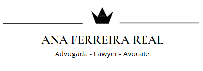

Consultations en personne, par téléphone, courriel ou visioconférence.
Ana Ferreira Real – Avocate
Exerçant à titre individuel, elle offre un conseil juridique clair et pragmatique, axé sur les résultats, le respect des délais et une communication transparente. Son travail repose sur la rigueur, la discrétion et une collaboration étroite avec chaque client à toutes les étapes du dossier.
Langues
PT · EN · FR
Domaines d’intervention préférentiels
Droit immobilier — Achat, vente ou location de biens immobiliers sur tout le territoire portugais
- Rédaction et/ou analyse de contrats-promesse de vente.
- Réalisation de la due diligence juridique et suivi de l’ensemble du processus de transfert de propriété.
- Rédaction et/ou révision de contrats de location.
- Conseil et représentation du client à toutes les étapes de la transaction.
Successions, estate planning et testaments
- Rédaction de testaments et planification successorale.
- Assistance complète dans les procédures de succession et d’administration d’héritage.
- Conseil et représentation à toutes les étapes du processus successoral et dans les questions connexes.
Contrats de droit civil
- Rédaction, révision et négociation de différents types de contrats civils.
- Évaluation des risques et conseil juridique préventif.
- Suivi et résolution des questions contractuelles.
Conseil juridique
- Accompagnement juridique continu et personnalisé pour une clientèle nationale et internationale.
- Clarification des questions juridiques et définition de stratégies adaptées à chaque situação.
- Communication directe et suivi attentif à toutes les étapes du dossier.
Contact
Courriel : anaferreirareal.adv@gmail.com
Téléphone / WhatsApp : +351 962 639 197
Adresse : Avenida 1.º de Maio, n.º 1, 2.º andar, 2500-081 Caldas da Rainha, Portugal